Создание игр в Roblox Studio
Работа с ландшафтом
Роль художника по окружению
Художники по окружению - это люди, которые создают ландшафты и локации в играх. Это отдельная, очень важная и интересная специальность, на данный момент одна из самых востребованных в индустрии.
На данном занятии мы узнаем, как пользоваться базовыми инструментами работы с ландшафтом, которые предоставляет Roblox Studio.
 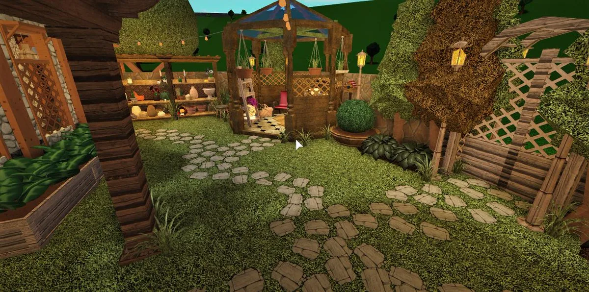
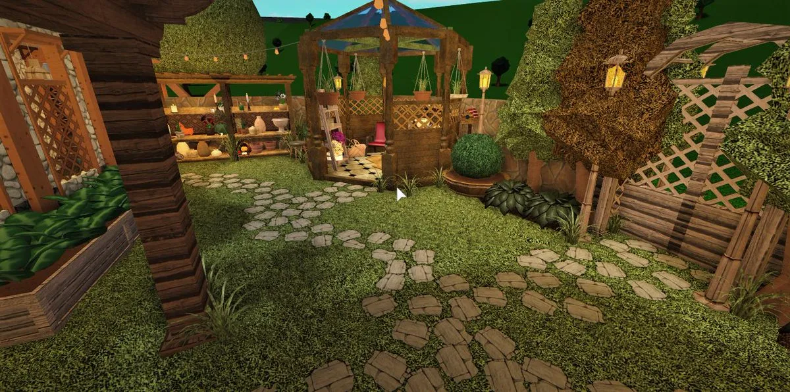
Создаем и настраиваем новый ландшафт
Генерация нового ландшафта
Для начала практической части создадим новый проект из шаблона Flat Terrain.
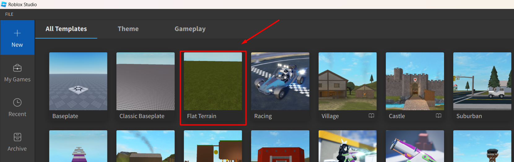В этом шаблоне присутствует только пустой плоский ландшафт.
Откроем панель работы с ландшафтом - нажмем на кнопку Editor.
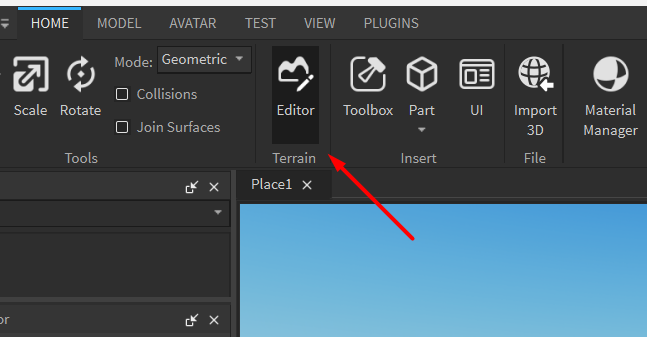В открышемся окне нажмем на кнпку Clear, чтобы удалить базовый ландшафт - это необходимо для генерации нового ландшафта. После этого нажмем на кнопку Generate.
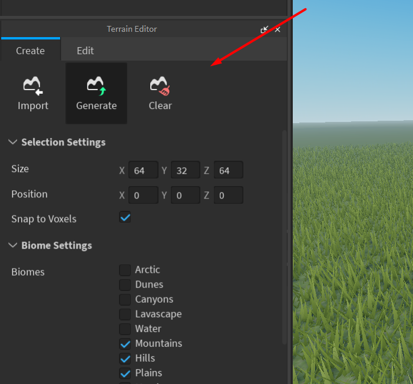После нажатия на Generate появятся настройки генерации ландшафта. Настроим размеры ландшафта и выберем нужные биомы в разделе Biome Settings.
Параметр Biome Size задает минимальный размер каждого биома. Seed указывает ключ случайной генерации ландшафта.
После настройки параметров нажмем на кнопку Generate и дождемся окончания генерации ландшафта:
Запустим игру и посмотрим на результаты нашей ландшафтной генерации
 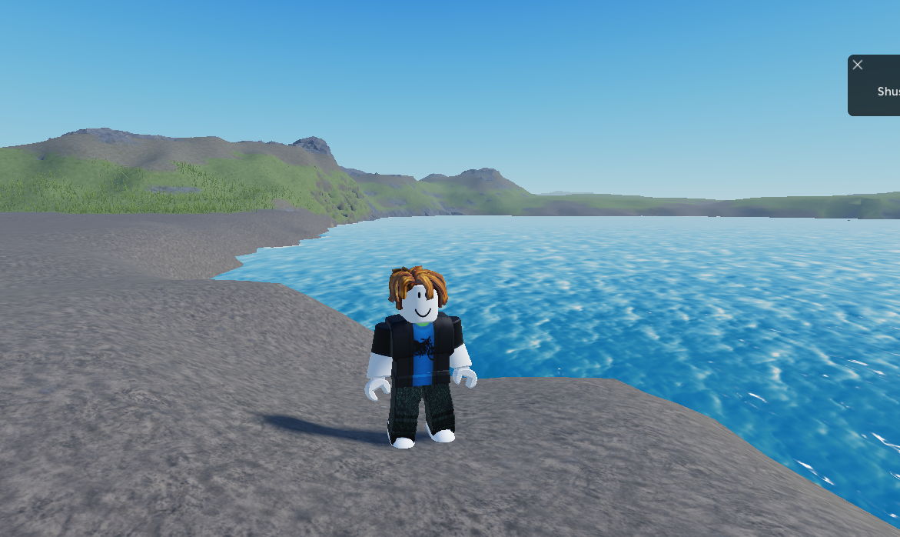
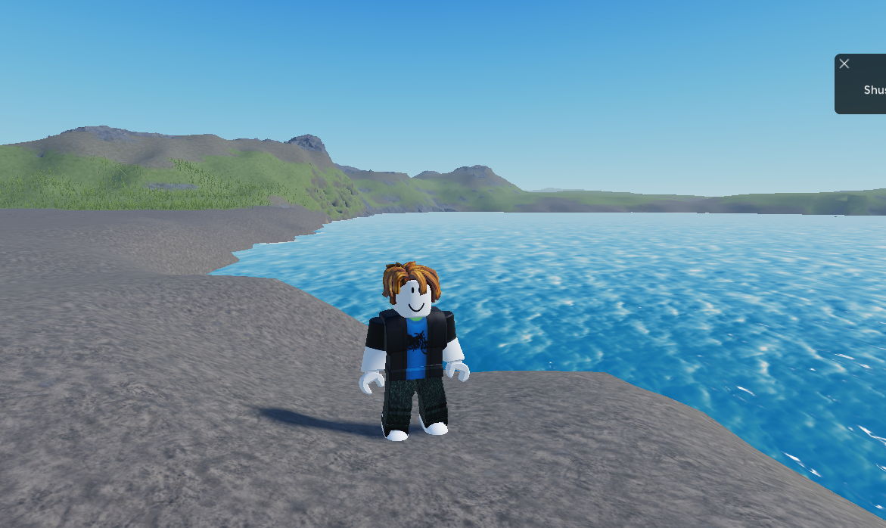
Добавляем элементы ландшафта. Инструмент Draw - Add
Переключимся на третью вкладку окна Terrain Editor - Edit. В этой кладке находятся инструменты для работы с ландшафтом. Выберем инструмент Draw (режим Mode - Add) - это инструмент добавления ландшафта.
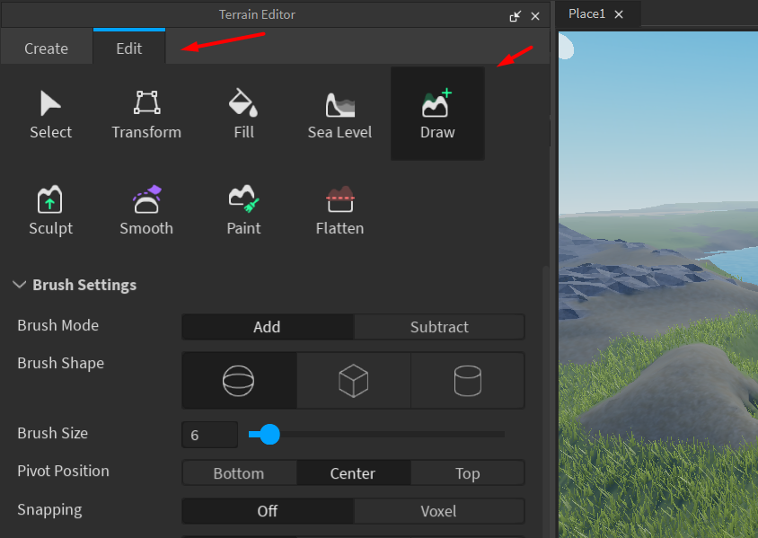Draw (Add) работает с привязкой к рабочим плоскостям - они отображаются сеткой под курсором. Сетка проецируется в зависимости от положения и угла камеры.
Настроим инструмент и создадим гору, пользуясь различными вариациями параметров кисти:
- Сфера, куб и цилиндр изменяют форму кисти - используется для создания разных форм ландшафта.
- Base Size - размер кисти.
- Pivot Position - положение кисти относительно курсорa.
В настройках материалов (раздел Material Settings) можно выбрать материал для работы. Параметр Auto Material сохраняет материалы участка ландшафта, автоматически подбирая материал по месту применения.
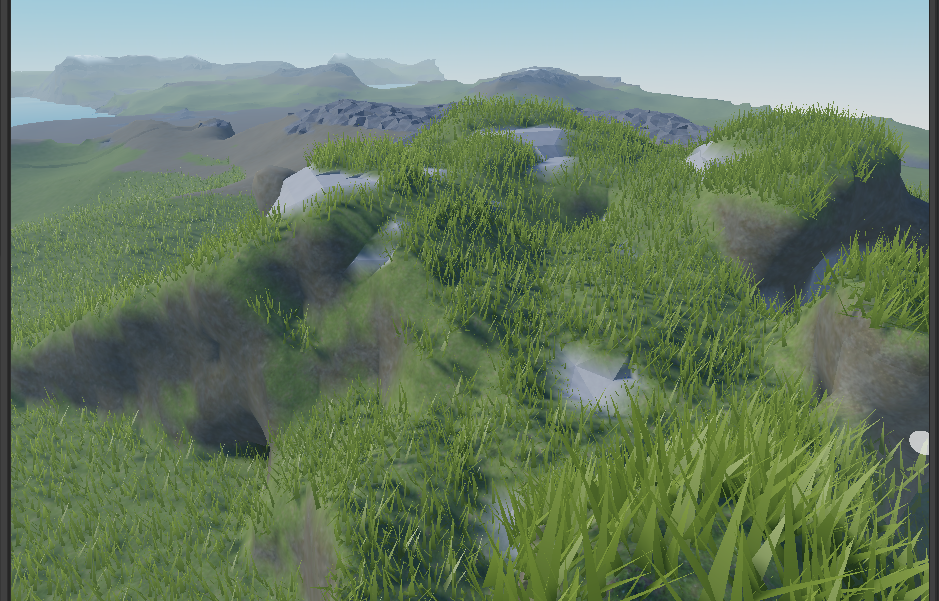Создаем пещеры и проходы. Инструмент Draw - Subtract
Переключимся на следующий инструмент - Subtract (Draw -> Mode = Subtract). Он работает по тем же принципам, что и Add, но вычитает геометрию.
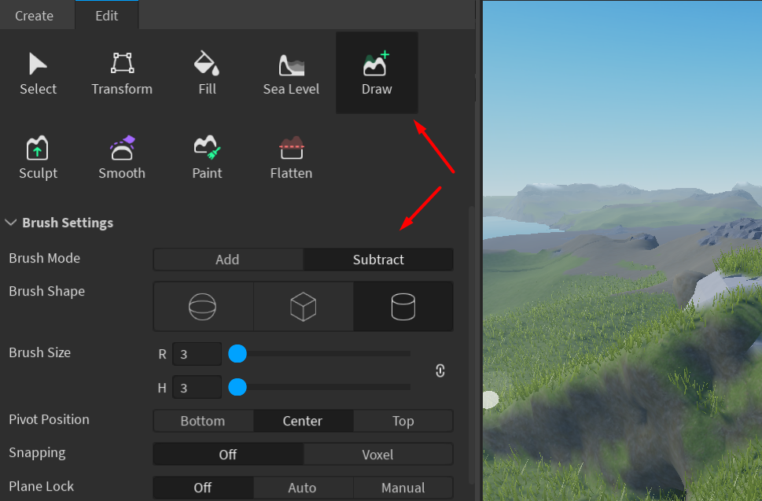Настроим с его помощью пещеры и проходы в горе. Попробуем разные настройки Pivot Position.
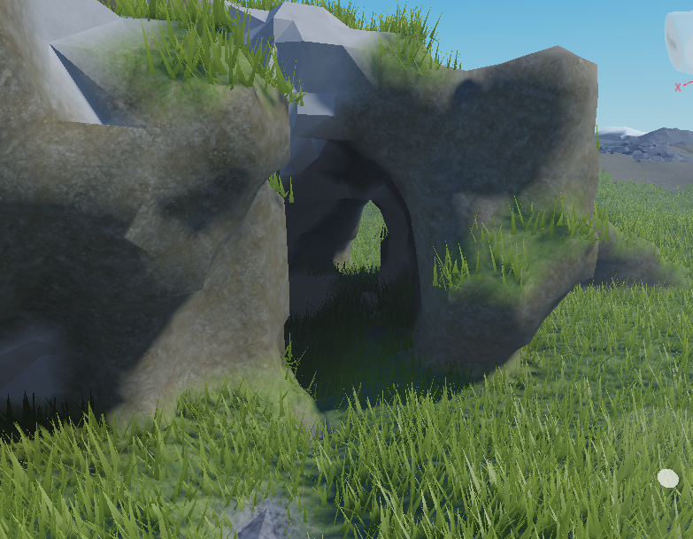Наращиваем и уменьшаем ландшафт
Следущий инструмент, который мы рассмотрим - Sculpt (режимы Add и Subtract).
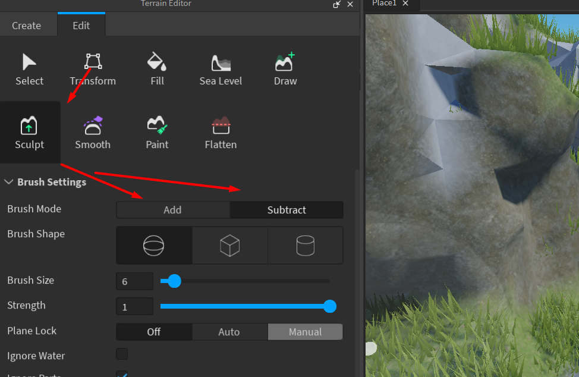Это также парные инструменты, которые позволяют наращивать и уменьшать ландшафт, но они не привязаны к сетке. Используются для того, чтобы «выдавить» или «вдавить» ландшафт по форме кисти.
В отличие от предыдущих инструментов, эти два инструмента имеют параметр Strength, который задает силу воздействия.
Пользуясь этими инструментами, добавим дополнительные детали к созданной горе, сделаем тропу, ведушую к вершине.
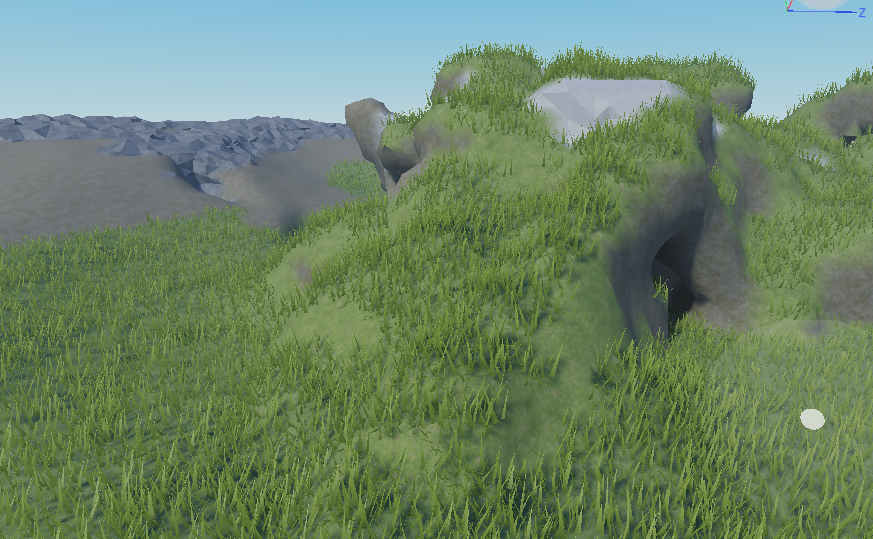Сглаживаем и выравниваем ландшафт. Инструменты Smooth и Flatten
После знакомства с инструментами наращивания ландшафта перейдем к инструментам сглаживания и выравнивания - Smooth и Flatten.
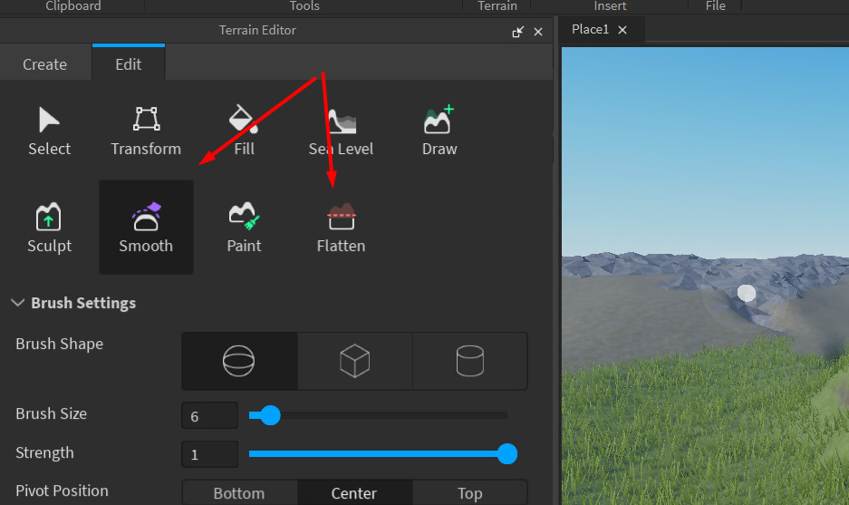Smooth позволяет сгладить неровности ландшафта и привести его к средней величине. Используем Smooth для того, чтобы сгладить неровности, полученные при работе с предыдущими инструментами.
Будем менять параметр Strength чтобы контролировать силу применения инструмента.
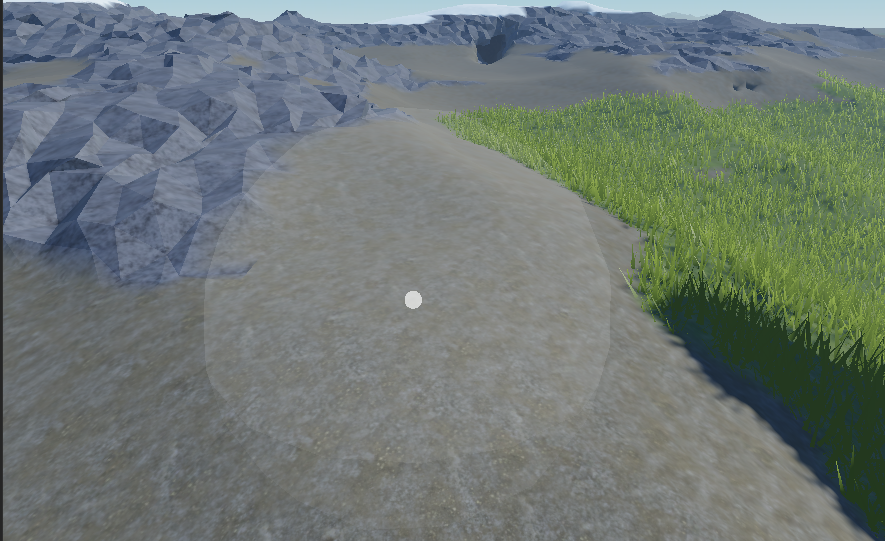Flatten позволяет быстро выровнять поверхность в горизонтальной плоскости.
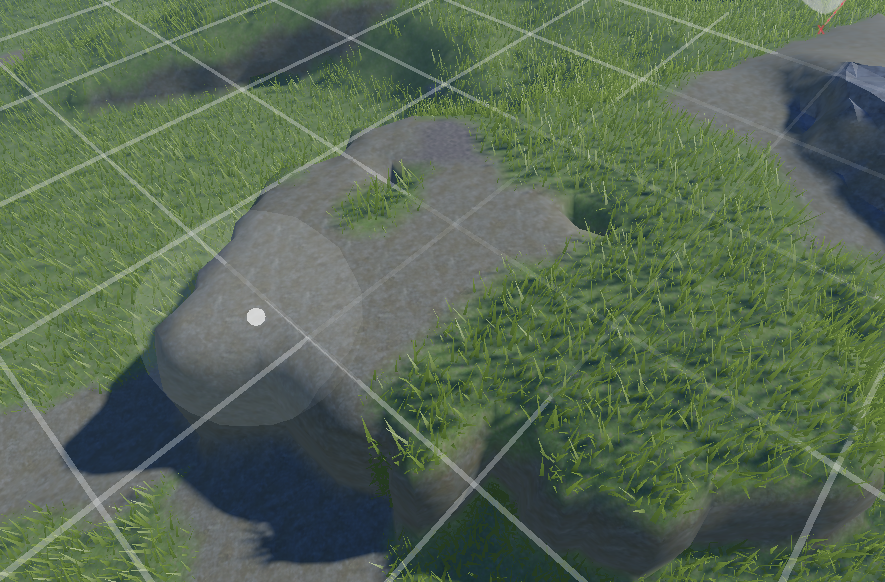В настройках по умолчанию Flatten выравнивает абсолютно всё, что попадает в зону действия: ландшафт, находящийся ниже выбранной высоты, поднимается наверх, выше - опускается вниз.
Параметр Flatten Mode позволяет изменить алгоритм применения этого инструмента: средний режим будет влиять только на участки ландшафта, находящиеся ниже выбранной высоты, первый (левый) режим будет воздействовать только на то, что находится выше.
С помощью инструмента Flatten можно делать более резкие и обрывистые переходы поверхностей, таким образом уточняя подножия и обрывы горы. Попрактикуемся в использовании этого инструмента в разных модификациях и с разными настройками параметров Strength на уже созданной горе.
Перекрашиваем участки ландшафта. Инструмент Paint
Следующие два инструмент позволяют работать с материалами, не затрагивая геометрию ландшафта.
Первый инструмент - Paint, с его помощью можно перекрасить участок ландшафта, добавив новый материал.
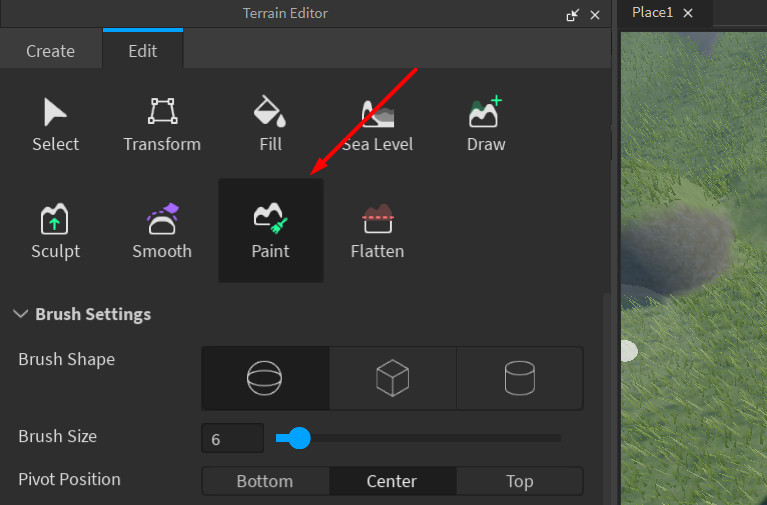В нижнем разделе Material Settings можно выбрать материал, который будет наноситься.
Используя этот инструмент, добавим новые материалы на ландшафт, например, снежную вершину:
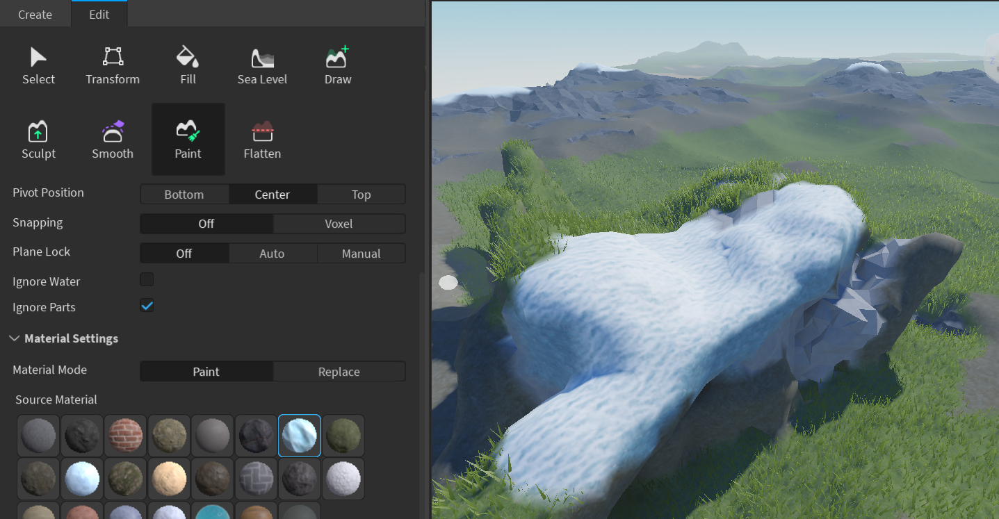Изменяем и перекрашиваем материалы. Инструмент Replace
Инструмент Replace позволяет перекрасить один материал, не затрагивая другие материалы на сцене.
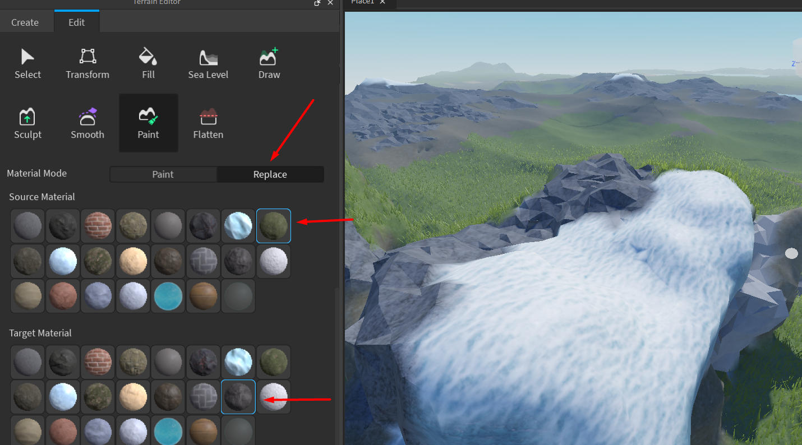Через параметр Source Material задаем желаемый материал. В параметре Target Material укажем новый материал. С помошью этого инструмента заменим один из материалов на каком-либо участке ландшафта на другой.
Можно добавить дополнительные детали по кромке какого-нибудь материала.
Настраиваем глобальный уровень воды. Инструмент Sea Level
Последний инструмент работа с ландшафтом - это Sea Level. Этот инструмент позволяет изменять глобальный уровень высоты воды.
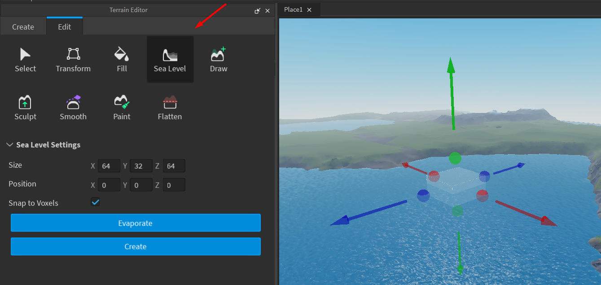Для начала работы с этим инструментом при помощи манипуляторов сделаем так, чтобы весь ландшафт попал в синий куб, появившийся на сцене - это область работы инструмента. После этого нажмем на кнопку Evaporate - она уничтожит всю воду, которая есть в сцене. Выровняем верхнюю часть куба по желаемой новой высоте воды и нажмем на кнопку Create - уровень заполнится водой в указанном объеме.
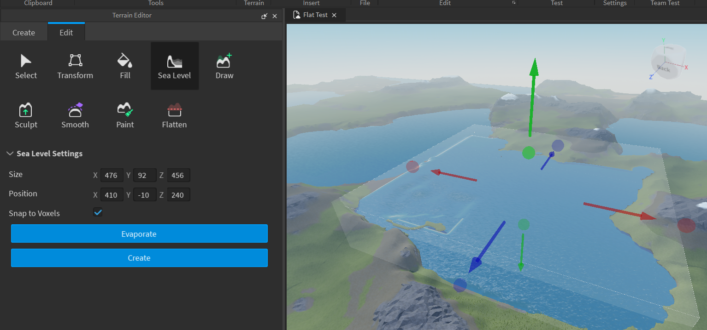Важность проработки дизайна окружения. Путь игрока и точки интереса
Этот раздел посвящен геймдизайну, а именно - проработке дизайна окружения для того, чтобы незаметно для игрока сделать созданный ландшафт открытого мира интересным и подталкивающим к изучению.
Это достигается при помощи работы с точками интереса.
Точка интереса - это ключевая локация на карте, привлекающая внимание игрока и пробуждающая в нем желание дойти до нее и исследовать. В таких локациях обычно размещают основные или побочные квесты, дополнительные активности (лагеря бандитов, поиск сокровища, скрытые элементы сюжета и тд.).
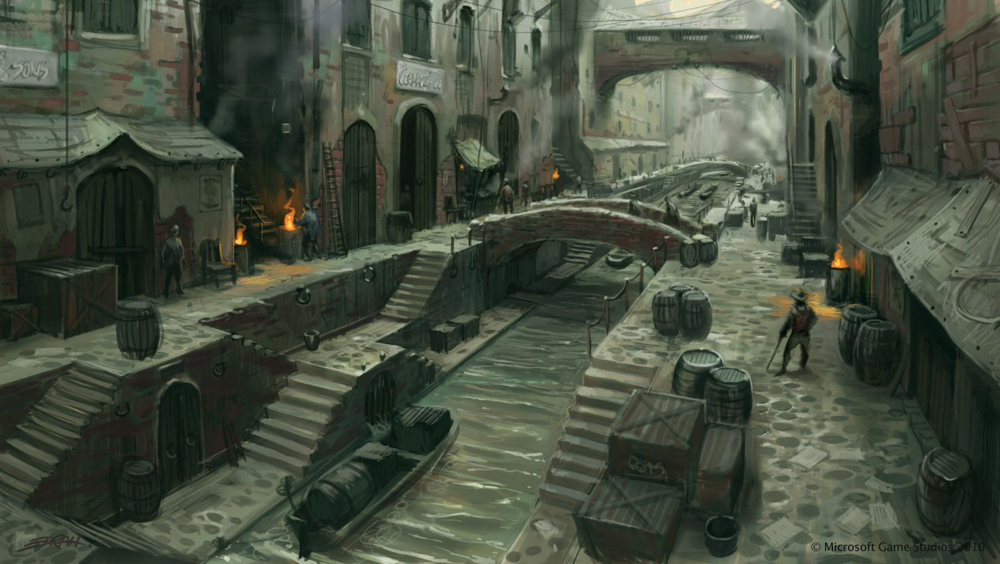Хороший геймплей строится на сочетании точек интереса и сюжетных арок. В этом занятии мы не будем работать с сюжетом, но научимся прорабатывать места, в которые нам нужно направить игрока незаметно для него.
Одна из ключевых обязанностей художника по окружению - это создание такого ландшафта, по которому игрок будет подсознательно идти в заданном направлении, перемещаясь от одной точки к другой в соответствии с сюжетом.
Правильная точка интереса имеет точку входа, которая намекает на то, что внутри есть что-то интересное (тропа, пещера, мост и тп.), выделяется на фоне окружения, видна издалека и находится недалеко от главного пути игрока.
Точка начала игры
Первое, что нам нужно сделать - найти три ключевые точки интереса, с которыми мы будем работать на этом занятии, и определиться с точкой, в которой мы начнем игру. В этой точке разместим SpawnPoint, для этого перейдем во вкладку Model и создадим соответствующий объект нажатием на одноименную кнопку.
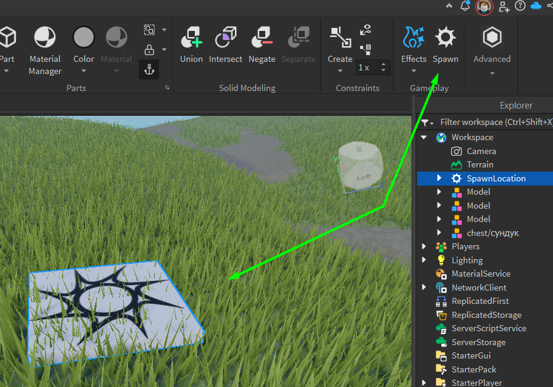Определяем финальную точку и основную тропу
Определим главную точку, в которую мы будем вести игрока: она должна быть в дальнем конце карты и хорошо видна из точки начала игры.
После определения главной точки интереса посмотрим на карту с высоты и при помощи инструмента Paint нарисуем тропу от стартовой точки к финальной. Эта тропа должна проходить через две остальные точки интереса, которые будут проработаны как дополнительные локации для исследования.
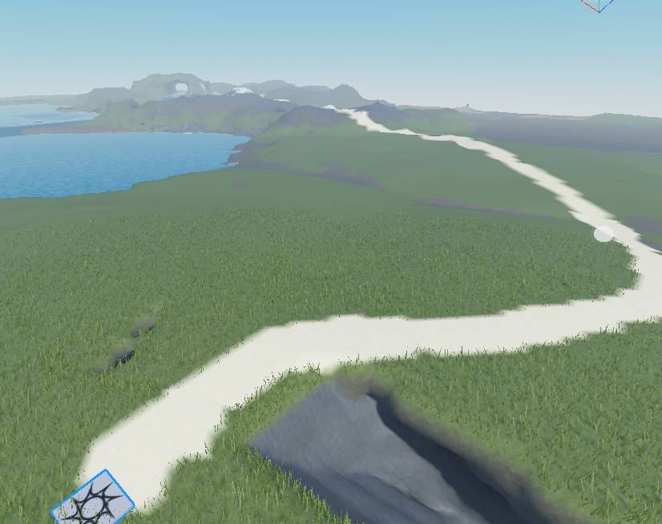В первую очередь необходимо сделать природные границы в виде гор, ущелий, обрывов и других непроходимых участков ландшафта: таким образом мы укажем игроку, куда ему нужно идти.
Используя инструменты манипуляции ландшафтом, проработаем основную тропу таким образом, чтобы ограничить игрока в передвижении в неправильных направлениях.

Настраиваем путь игрока
Гора - первая точка интереса
Перейдем к первой точке интереса. В качестве примера будет приведена гора. Определим главный маршрут прохода к этой локации - для горы максимально логичным будет путь на вершину через узкие проходы и обрывы.
Доработаем общий объем горы: необходимо сделать так, чтобы препятствие было визуально привлекательным. Для этого при помощи элеменов изменения ландшафта добавим тропу и визуальные признаки прохода к вершине - природные арки, пещеры и т.д.
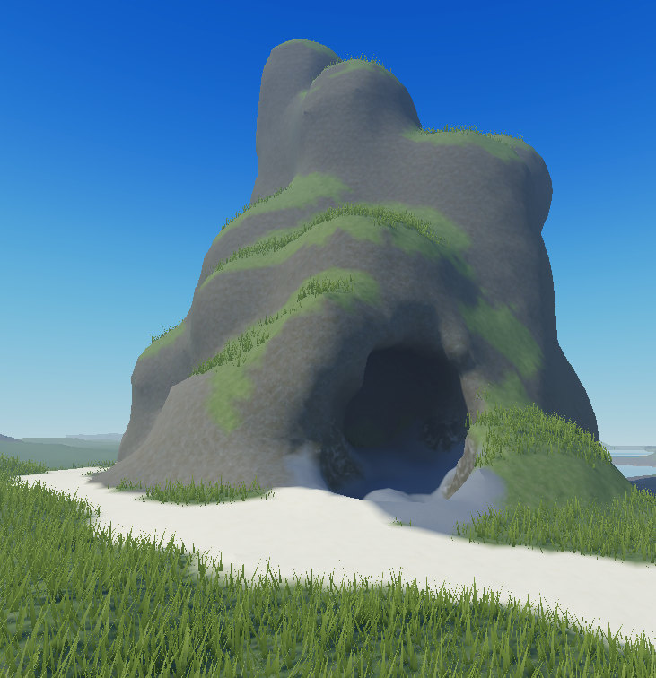Оформим вход в локацию - он должен прилегать к основной тропе и визуально выделяться. Используем инструмент Paint для добавления новых материалов в качестве визуальных акцентов, например, можно использовать песок, камень, снег, лаву и т.п.
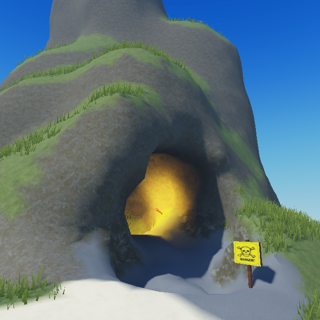Ландшафт на пути игрока
Проработаем путь игрока при помощи изменения формы и материала ландшафта. Постараемся сохранять естественность локации, чтобы полученный путь выглядел достаточно органично и не выбивался из общей картины.
Водные преграды
Если местность позволяет, мы можем добавить дополнительную природную направляющую - реку или ручей, идущий вдоль главного пути - это подсознательно будет подталкивать игрока не пересекать границу и идти в направлении течения воды.
С помощью воды доведем игрока до следующей локации. В качестве примера здесь можно использовать озеро с горными массивами на другой стороне. При необходимости, можно добавить дополнительный ландшафт, чтобы визуально выделить точку интереса.
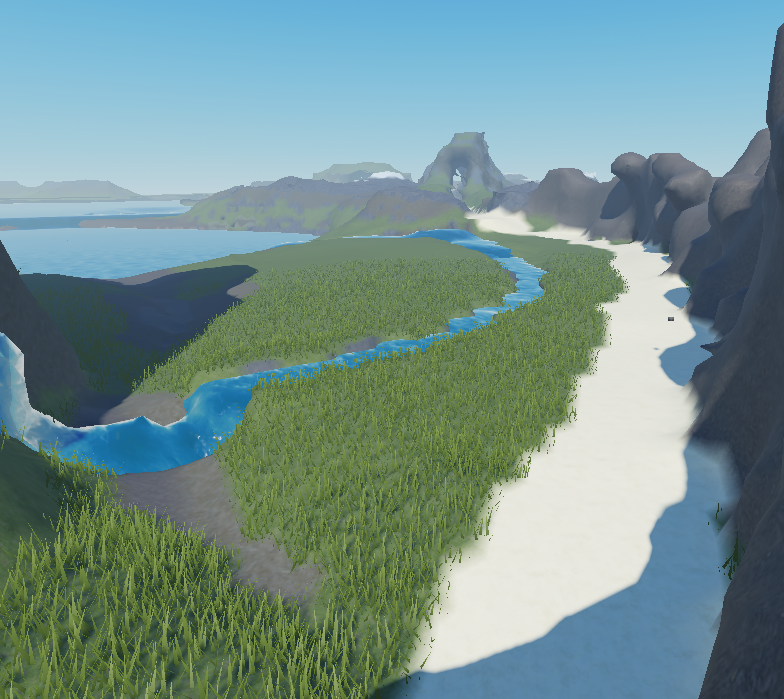Добавим скрытую заводь, которую будет частично видно со входа в локацию. Это место должно намекать на то, что в нем есть что-то интересное, однако, чтобы узнать, что именно, необходимо будет проплыть через озеро.
Для того, чтобы органично оформить вход на локацию такого вида, проработаем спуск к воде: с помощью инструмента Paint создадим песчаный пляж и замаскируем добавленные вами материалы при помощи смешения их с другими материалами, использующимися в окружении.
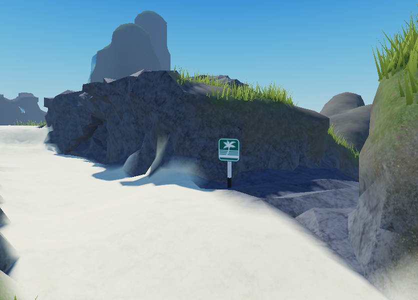Ключ к созданию реалистичного пляжа - неровные края и неравномерное распределение песка по поверхности, также песок нужно сочетать с камнями, травой, землей, листьями и т.д.
Путь игрока - новые материалы и траектории
Продолжим оформлять путь к финальной точке. Чтобы создать ошущение приближения к финальной точке можно добавить более экзотических материалов, например, лаву и базальт.
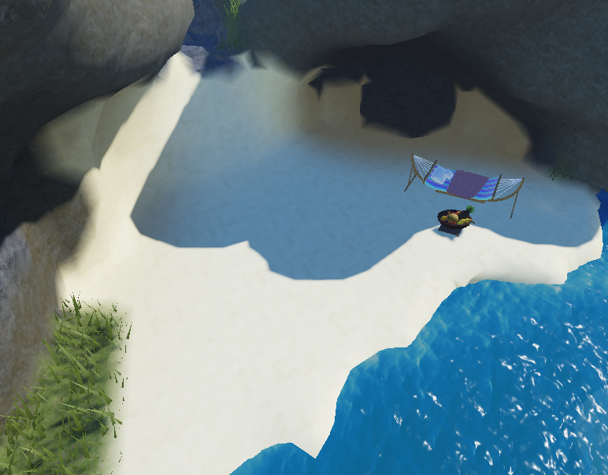Не забываем следить за тем, чтобы игрок органично передвигался по тропе, не сбиваясь с курса: для этого слегка ограничиваем его передвижение при помощи обрывов и выступов.
В финальной локации нужно забраться на вершину плато из песчаника, при этом не создаем ярко выраженную тропу - её необходимо задать при помощи ландшафта. Используем природные переходы между поверхностями, добавим сложности прохождения, проводя игрока около уступов и обрывов, добавим интересные элементы ландшафта, такие как природные арки, предоставляющие путь над пропастью, добавим каскад из небольших плато, по которым нужно будет запрыгнуть на самый верх.
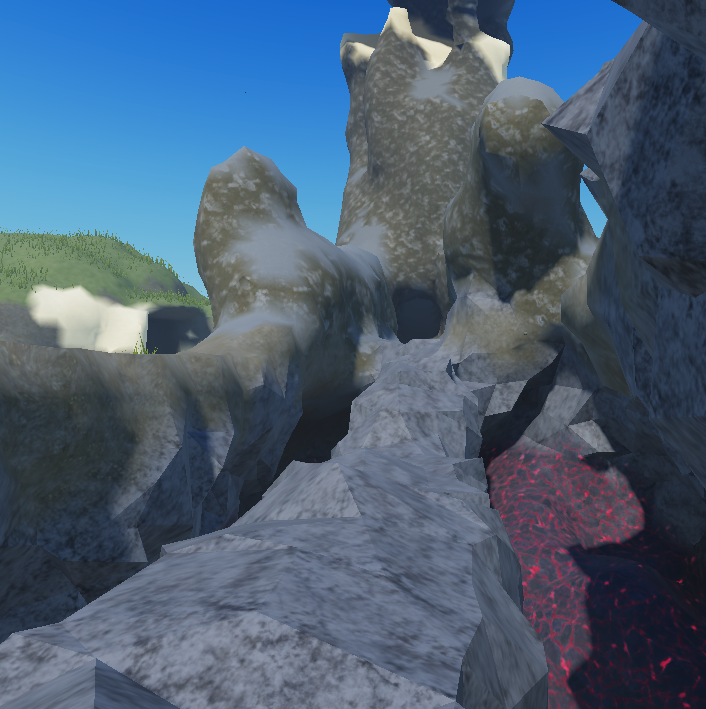Финальная локация
Теперь оформим финальную локацию с помощью Toolbox'a: можно поставить сундук, пиратский флаг и для драматичности добавить скелет неудавшегося искателя приключений :)
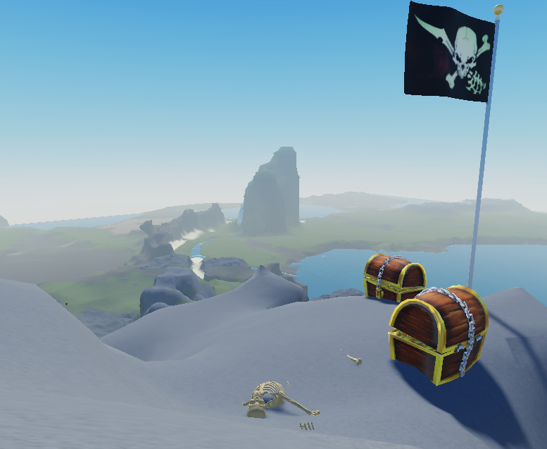Домашкаа 😁
Необходимо доработать ландшафт гоночной карты, которую мы начали оформлять на занятии. Можно чередовать использование инструментов для ландшафта в окне Terrain Editor и готовых предметов из окна ToolBox.
Пример формы гоночной трассы:
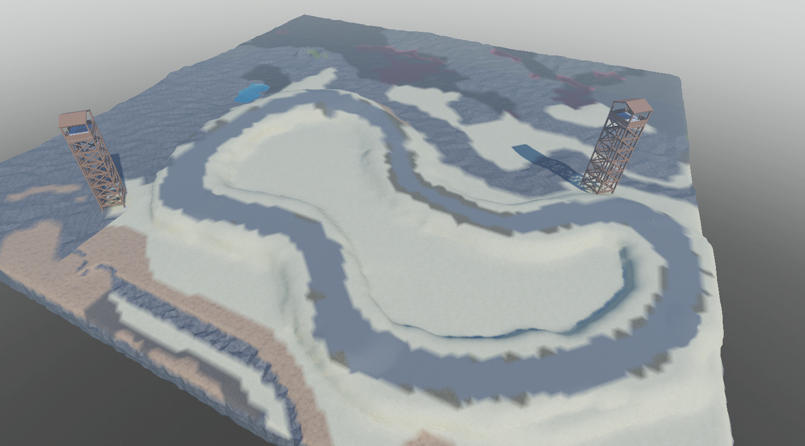Из ToolBox можно добавить реалистичное небо, различные стрелки направления пути, освещение, растительность и дополнительные элементы окружения, подходящие для локации гонок. Не забудьте сохранить вашу прекрасную работу :)